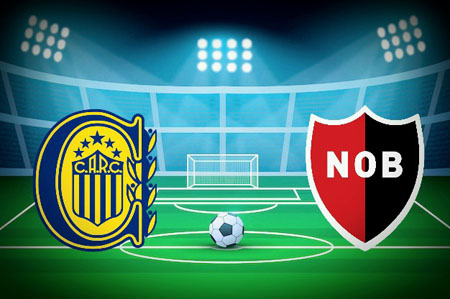
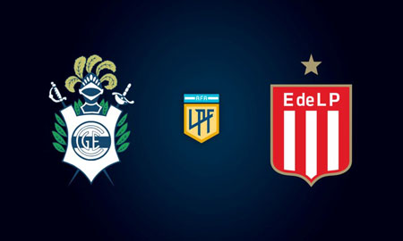
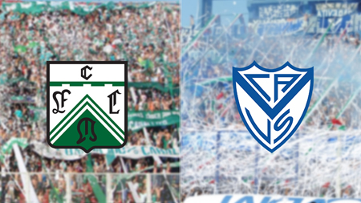

Cuenta con una rica trayectoria, comenzando a disputarse en el año 1905 (con victoria de Newell's por 1 a 0). En el ínterin se han realizado decenas de los mismos abarcando diferentes instancias, como ser: Liga Rosarina de Fútbol, Asociación Rosarina de Fútbol, Primera división argentina, copas nacionales oficiales de AFA, copas provinciales oficiales, y copas internacionales de Confederación Sudamericana de Fútbol, y encuentros amistoso Newell's Old Boys y Rosario Central son los dos únicos clubes del interior de Argentina que al 2024 han obtenido títulos nacionales oficiales de AFA tanto en Ligas de Primera División como en copas nacionales.
La gran rivalidad histórica con que se vive dicho encuentro, lo cataloga como uno de los más atractivos y pasionales de Argentina. Según varios estudios vinculados a la investigación social en el fútbol, Rosario está en uno de los pocos aglomerados urbanos del país, como ocurre en los de La Plata, Santa Fe, Córdoba y San Miguel de Tucumán, donde hay clubes locales que superan en popularidad a River Plate y Boca Juniors; los dos equipos más populares de Argentina
El clásico Platense (también nombrado como clásico de La Plata o clásico de la ciudad de las diagonales) es como habitualmente se denomina al partido del fútbol argentino que enfrenta a los dos clubes más importantes de la ciudad de La Plata: Estudiantes de La Plata y Gimnasia y Esgrima La Plata. Comenzaron a enfrentarse oficialmente en 1916, durante la era amateur, luego del ascenso de Gimnasia a Primera División en 1915, categoría en la que Estudiantes militaba desde 1912. La rivalidad es una de las más destacadas del fútbol argentino, con una larga tradición de enfrentamientos en campeonatos regulares de Primera División, copas nacionales y, desde 2014, en torneos internacionales.
El primer encuentro entre ambos equipos se disputó el 27 de agosto de 1916, por el Campeonato de Primera División de la Asociación Argentina de Football, y Gimnasia se impuso por 1-0 a través de un gol en contra de Ludovico Pastor.[31] En el clásico disputado por el Campeonato de Primera División 2024, el 28 de julio de 2024, Estudiantes derrotó a Gimnasia por 4-1 y volvió a marcar la mayor diferencia de un equipo sobre otro en el historial de partidos oficiales por campeonatos de liga de la era profesional, al superar a su tradicional rival por 14 victorias, con un total de 60 encuentros ganados y 46 perdidos. Sumando los partidos oficiales disputados por campeonatos regulares de Primera División, entre el amateurismo y el profesionalismo, esta serie asciende a 17 partidos de ventaja: Estudiantes 65; Gimnasia 48; y 62 igualdades.
El clásico del oeste es el partido de fútbol que enfrenta a los clubes Vélez Sarsfield y Ferro Carril Oeste, ambos de la ciudad autónoma de Buenos Aires. Su denominación nace debido a que ambos clubes se encuentran hacia el oeste del casco céntrico de la ciudad, que se ubica en el extremo este de la misma. En total, este encuentro se disputó en 155 oportunidades (contando tanto la era amateur como la profesional), repartiendo 61 victorias para Vélez Sarsfield y 48 para Ferro Carril Oeste, mientras que empataron en 46 ocasiones. El primer encuentro se jugó en la era amateur, el 6 de junio de 1920, con resultado a favor de Vélez Sarsfield en condición de visitante por 5:0. La última vez que se enfrentaron fue el 24 de junio de 2000, en el Clausura 2000, con resultado a favor de Vélez Sarsfield por 1:0 en condición de visitante. Desde entonces, este encuentro no se ha vuelto a disputar debido a que ambos clubes participan de diferentes categorías, actualmente encontrándose Ferro Carril Oeste en la segunda división (Primera B Nacional) y Vélez Sarsfield en la primera.
